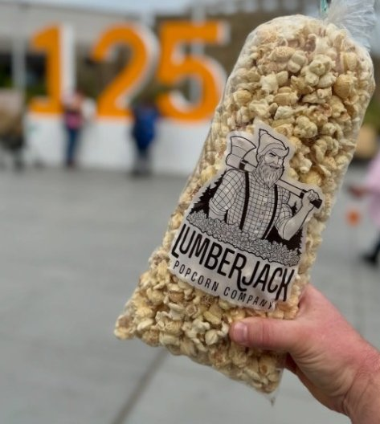
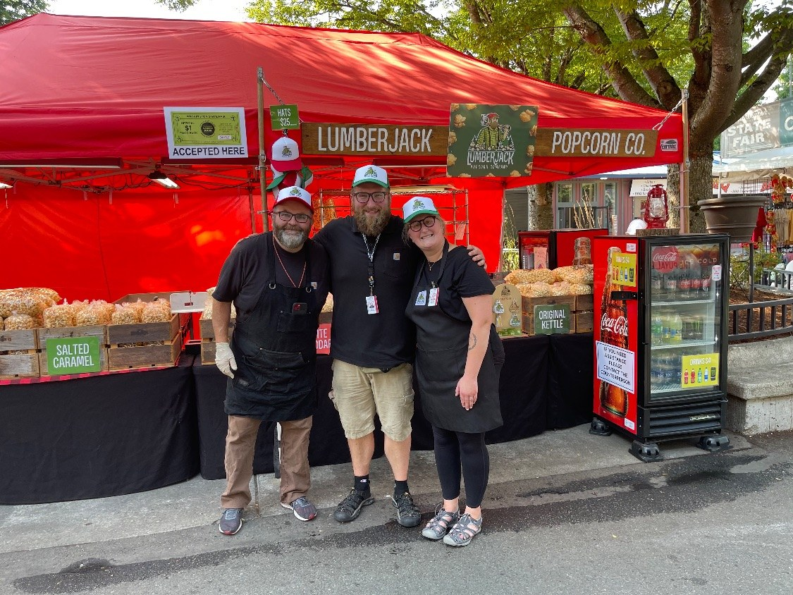
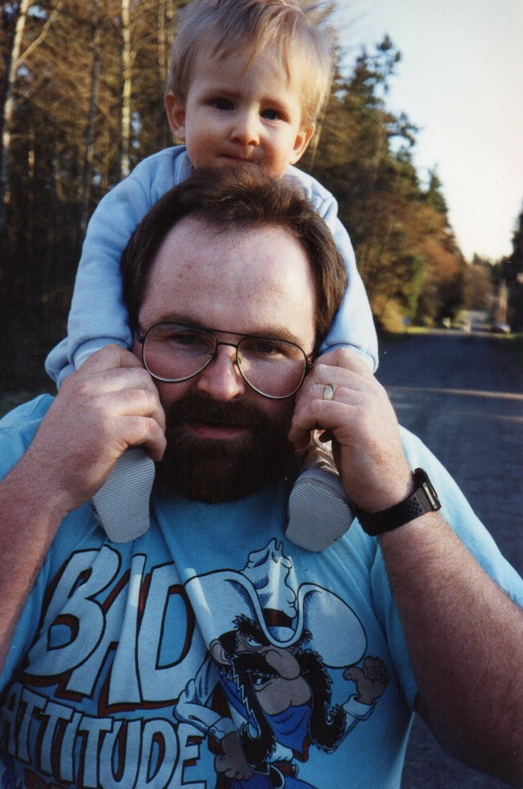
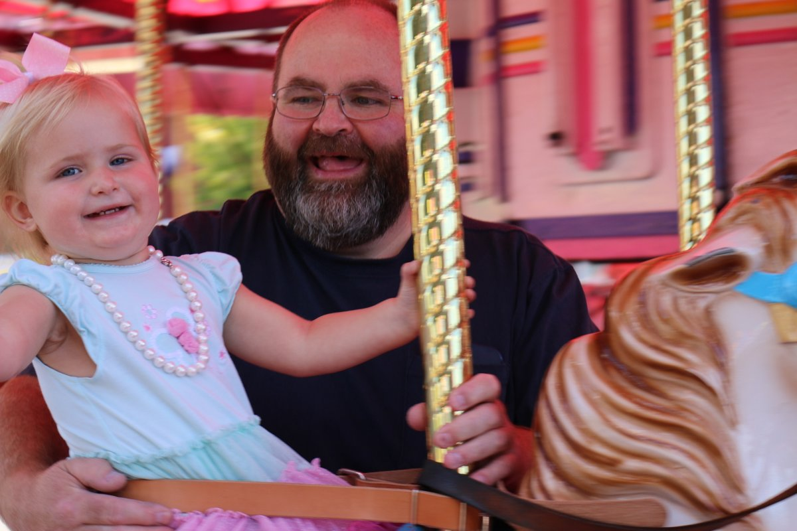
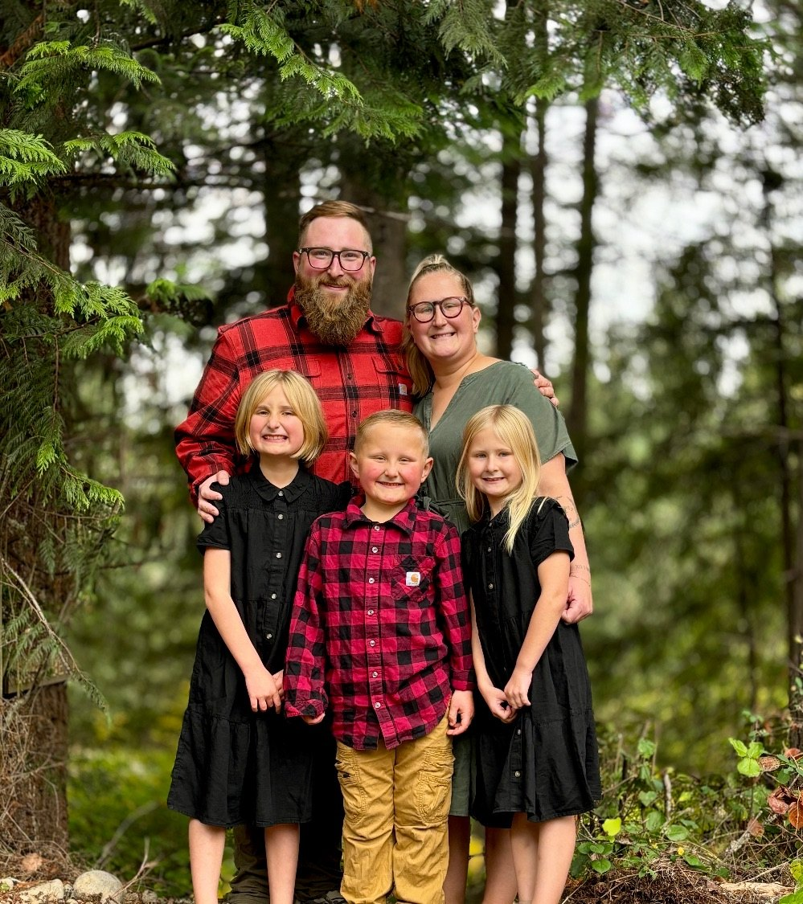
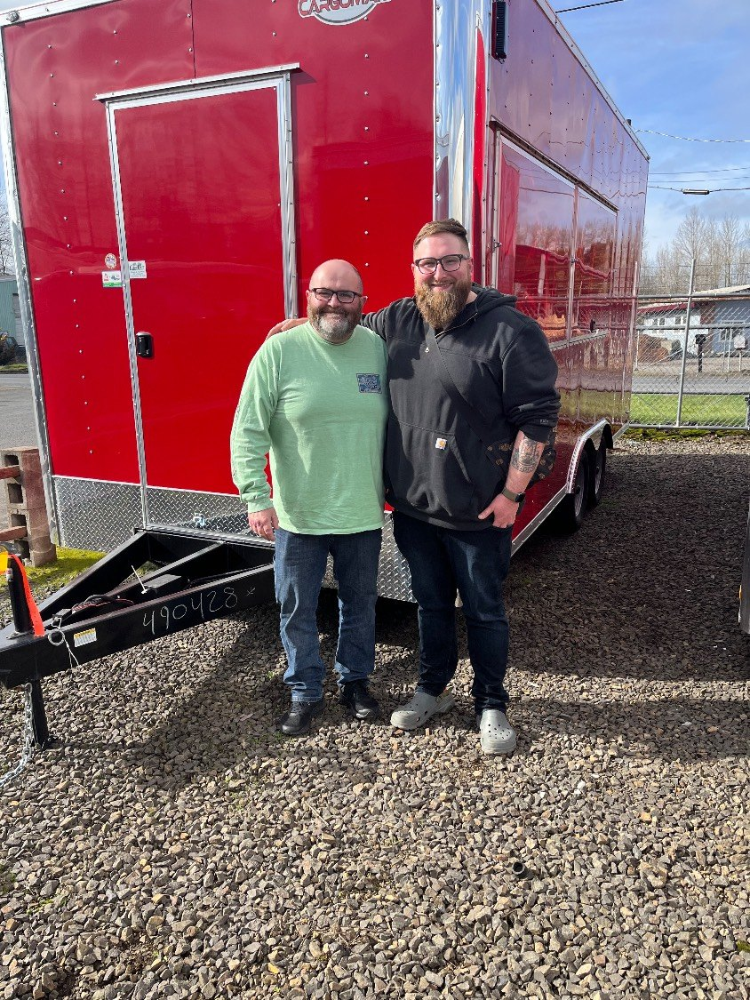
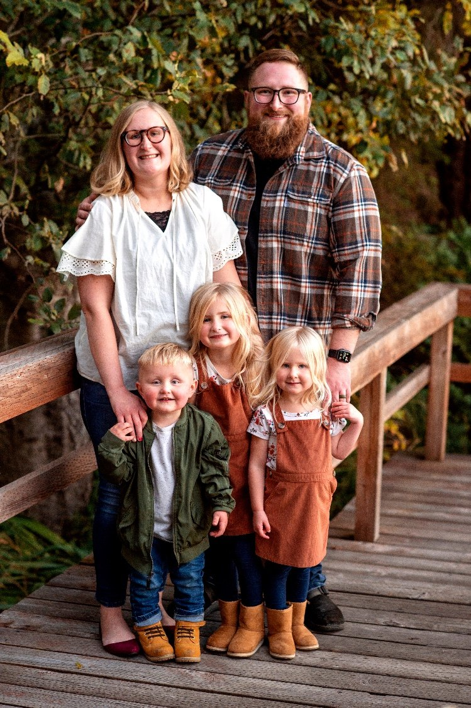
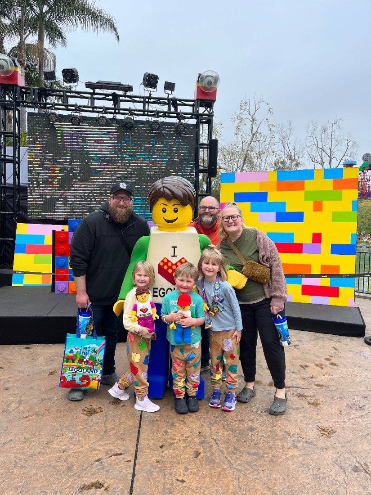
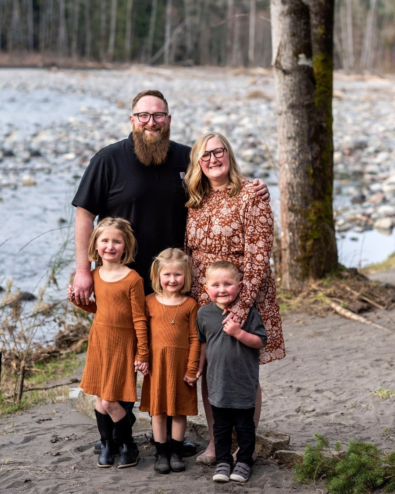

The Washington State Fair
Our main spot. Look for our trailer at the fair in Puyallup every season.
About Us · Since 2019
Started in 2019 by Nate, his wife Taylor, and his dad, Greg. Hand-popped popcorn, two popcorn trailers, and a lot of time together as a family.
Lumberjack Popcorn Company started in 2019 with Nate, his wife Taylor, and his dad, Greg.
Before there was a trailer or a single bag of kettle corn, Nate was walking through one of the darkest seasons of his life. Coming out of it, he knew what mattered most: his family. He wanted work that would provide for them and keep him close to them, not pull him away.
Taylor was right beside him through all of it, and she still is. Together with Greg, they started popping. Long fair days turned into time side by side, the kids grew up around the kettle, and slowly the dark gave way to something bright. Every bag we hand out is a small piece of that story.
“I started popping to provide for my family and be with them. What keeps me going is sharing my love of popcorn with everyone who steps up to the trailer.”
Nate, co-founder
The Lumberjack name runs deeper than the logo. We live in the shadow of Mt. Rainier, on the edge of Weyerhaeuser land. It's big timber country out here. And our family tree has real lumberjacks in it, back in the hills of West Virginia.
We're still family-owned, we still pop every batch by hand in small batches, and our corn is still Washington grown, just east of the mountains in Moses Lake. We load up our two popcorn trailers and bring them wherever people gather: fairs, night markets, farm stands, and company campuses. Our home base is the Washington State Fair in Puyallup, and along the way we've popped for teams at Boeing, Amazon, MultiCare, the University of Puget Sound, the Nisqually Indian Tribe, the Washington State Fair Event Center, and more.
Nate's dad, Greg, is still right there with us. Around the Fair he's better known as Papa Lumberjack (more on him below).
And yes, Bigfoot is a regular customer.

Meet Greg
Greg, better known around the Fair as Papa Lumberjack, is our supply guy. He keeps our trailers stocked so we never run out of kernels, sugar, or bags.
He loves working evenings at the Fair, so if you stop by after dark, there's a good chance he'll be the one handing you your bag. And when he's not popping, he's usually on a carousel with one of the grandkids.


A.K.A. the Popcorn Family
This business has always been about family. Nate and Taylor's three kids grew up around the trailers, and they're the reason we do it. These days, plenty of folks just call us the popcorn family.
When we're not popping, you'll find us:





We're a local family business, not a factory. When you order from us, you're talking to the people who pop it.
Small batches, popped fresh and seasoned by hand, so every bag tastes like it just came out of the kettle.
Our popcorn is grown just east of the mountains in Moses Lake, Washington. Local from the field to the kettle, and we're proud of it.
We're a mobile business, so our trailers are always on the move. Follow @lumberjackpopcorn for where we'll be next.

Our main spot. Look for our trailer at the fair in Puyallup every season.

Night markets, farm stands, and seasonal festivals around the region.

Grab a bag at local shops and cafés that carry Lumberjack Popcorn.

Employee appreciation days, conferences, and campus events for teams large and small.
Book a trailer, order bulk bags for your team, or grab a bag for yourself.